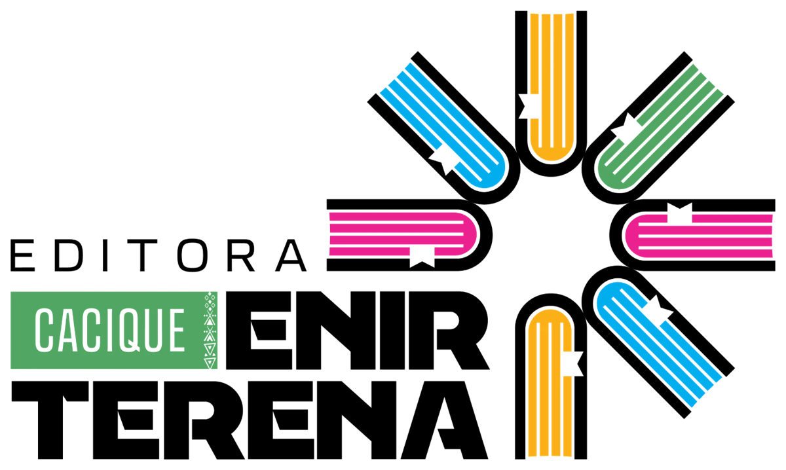
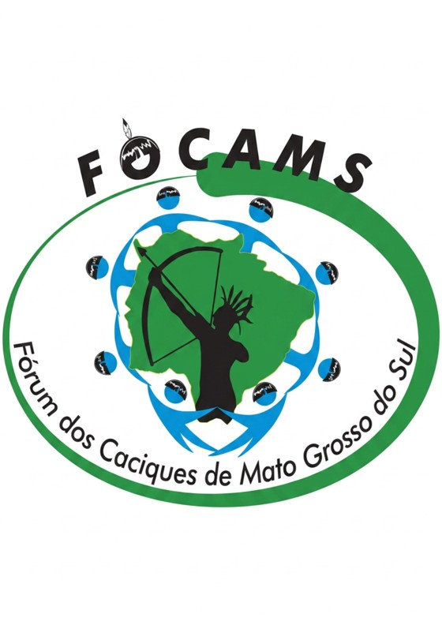

Cerâmica Terena
Técnicas, grafismos e mestras ceramistas: o patrimônio imaterial de Mato Grosso do Sul.

EDITORA CACIQUE ENIR TERENABioeconomia e Indicação Geográfica Indígena e seus Impactos na Língua, Saúde e Educação
Fundamentos Históricos e Jurídicos da Cerâmica Terena e da Ancestralidade Arawak

Da travessia do Chaco ao Mato Grosso do Sul, a cerâmica Terena atravessou séculos como linguagem, território e resistência. Este livro reúne história, linguística, direito e economia para mostrar que proteger esse saber é também proteger a língua, a saúde e a educação de um povo.
A obra examina a ancestralidade Arawak, a trajetória da Aldeia Urbana Marçal de Souza e o reconhecimento da cerâmica Terena como patrimônio imaterial de Mato Grosso do Sul. Analisa os instrumentos de propriedade intelectual à disposição dos povos indígenas, da marca coletiva à indicação geográfica, e propõe caminhos de bioeconomia em que a autoria, a titularidade e os benefícios permanecem com as comunidades.
Escrita por autoras e autores indígenas e parceiros, com revisão do Conselho Editorial da Editora Cacique Enir Terena, é uma contribuição à autodeterminação cultural dos povos originários.
Técnicas, grafismos e mestras ceramistas: o patrimônio imaterial de Mato Grosso do Sul.
Economia circular, franchising social e geração de renda com titularidade das comunidades.
Marca coletiva, indicação geográfica e proteção dos conhecimentos tradicionais.
A língua Terena, o Guaná e a escola indígena como direito e como resistência.
Determinantes sociais da saúde e a relação entre cultura protegida e bem-viver.
Do Chaco à Guerra do Paraguai: a história Guaná/Terena e a autodeterminação jurídica.
Cada item abre o leitor na página correspondente. A busca do leitor encontra qualquer palavra em todo o livro.
O uso do nome do Conselho Municipal dos Direitos e Defesa dos Povos Indígenas de Campo Grande (CMDDI) nesta obra e no selo editorial foi autorizado na 202ª Sessão Ordinária do Conselho, realizada em 13 de novembro de 2026, que tratou da aprovação do projeto do selo editorial indígena, com as obras editoriais já realizadas pelo Instituto Cacique Enir Terena.
Convocação da 202ª Sessão Ordinária, assinada pelo Presidente do CMDDI, Lisio Lili. Ata aprovada pelo Plenário.



A Editora Cacique Enir Terena produz suas obras com um motor editorial próprio, que segue as normas da ABNT e os padrões internacionais de acessibilidade do livro digital.
Nesta página, o livro completo pode ser lido gratuitamente, com busca em todo o texto, sumário interativo e leitura em voz alta.
Edição em EPUB 3 com metadados de acessibilidade, sumário navegável e paginação equivalente à edição impressa, para leitores de e-book.
Para instituições e pesquisadores, a Editora emite exemplares numerados e nominais, com texto cifrado e senha individual, registrados no acervo.